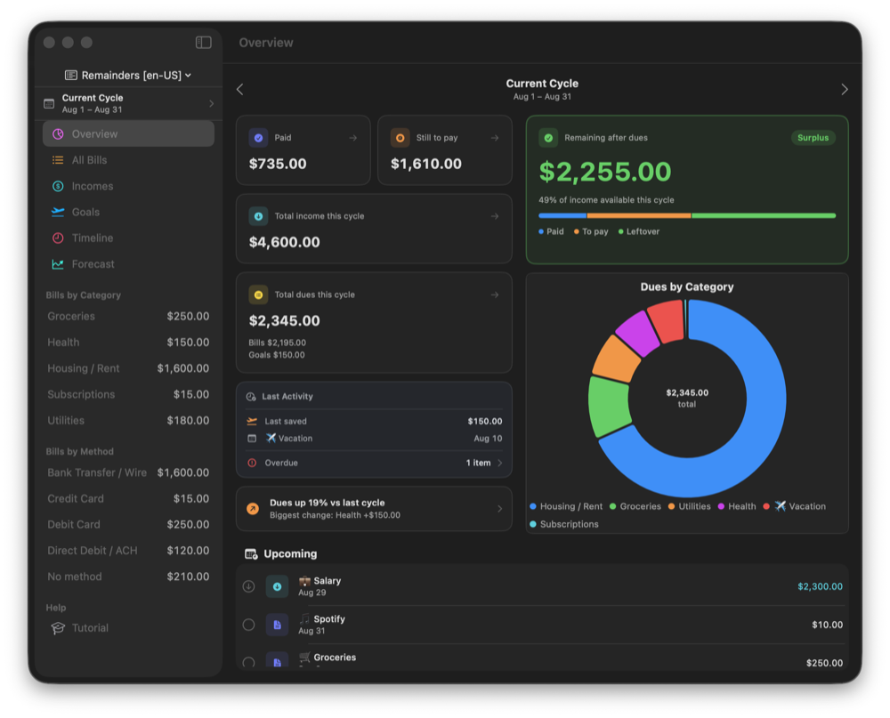
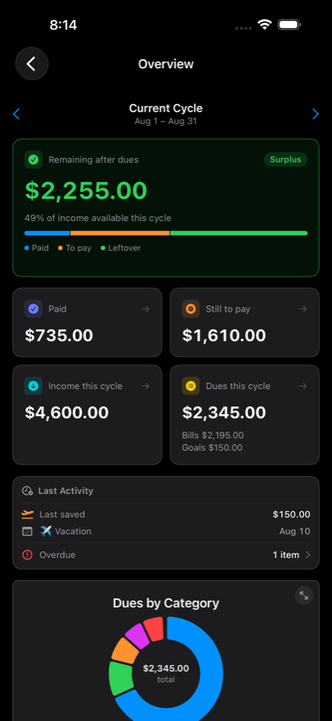
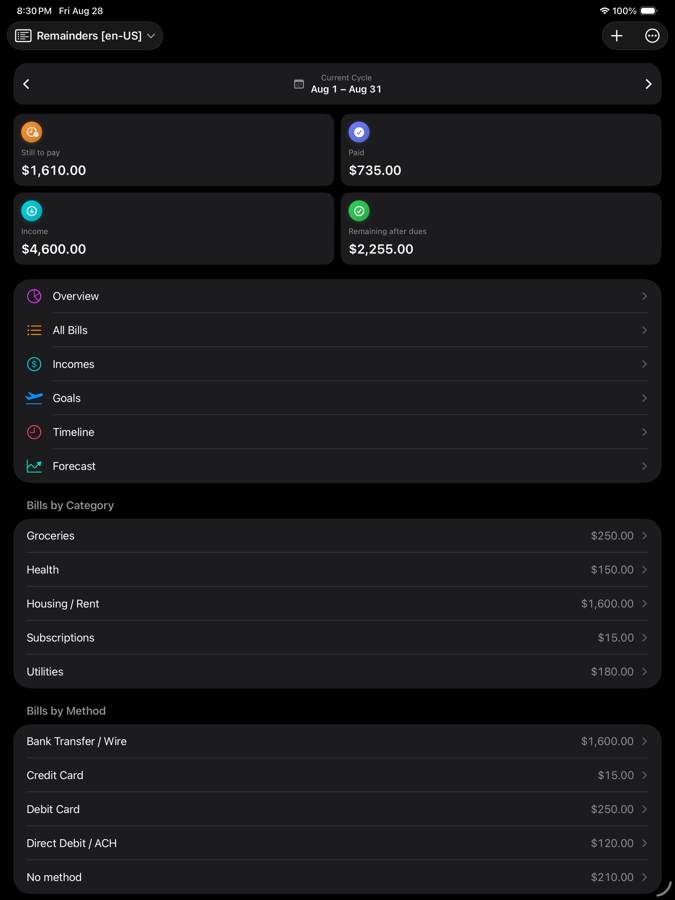

Remainders
Support & Privacy



Need help or have a question? Email remainders.support@icloud.com and we'll get back to you.
Remainders is a personal finance tracker built entirely on Apple Reminders. Below are answers to the most common questions.
Frequently Asked Questions
How does Remainders store my data?
Everything you add — bills, incomes, and goals — is saved as tasks in a dedicated list inside Apple's Reminders app. Remainders has no account, no servers, and no separate database. Your data lives in Reminders and syncs across your devices through your own iCloud, exactly like your other reminders. To remove all your Remainders data, delete its Reminders list.
Is my financial data private?
Yes. Remainders collects nothing. There's no login, no analytics, no advertising, and no third‑party services. Your information never leaves your device except through the iCloud sync you already use for Reminders (managed by Apple, not by us).
Why does the app need access to Reminders?
That's how it works — Remainders reads and writes your bills/incomes/goals as tasks in a Reminders list. It only touches the list you choose. You can revoke access anytime in Settings → Privacy & Security → Reminders.
I completed a recurring bill and the next one skipped a month. Why?
Recurring items use Reminders' own scheduling. When you complete a repeating bill, Reminders advances it to the next occurrence in the future. If you complete it after an occurrence's date has already passed, that occurrence is skipped. Tip: complete bills on time (the Overdue badge helps you spot ones that are due) to avoid skips.
If I un-check a completed recurring bill, why doesn't it come back as recurring?
When you complete a recurring bill, Reminders does two things at once: it marks that occurrence as done (a standalone, completed item) and it schedules the next occurrence of the series. So if you later un-check that completed item, it comes back as a single, one-time task — not a recurring one — because the recurring series has already moved on to its next date. You'll typically see your active recurring bill and this one-off; if you don't need the one-off, just delete it. This is how Apple's Reminders handles recurrence, and Remainders mirrors it.
What happens if I un-check a completed income or goal deposit?
An income returns to your active list as not received (same one-off behavior as above for recurring ones). For goals, completing an occurrence records a deposit — to undo it, delete that deposit from the goal's deposit history, which subtracts it from the saved total.
My amounts changed format after I switched region.
Currency, dates, and number formatting follow your device Region. When you change region, Remainders updates its entries to match your new format. This is expected — your values are unchanged, only the formatting.
Can I edit my bills directly in the Reminders app?
Yes — you can check items off, rename them, or change dates in Reminders, and Remainders will pick up the changes (and vice versa). The one thing to avoid is hand‑editing the amount in a task's title or the [Remainders] line in its notes — that's where each entry's value and settings are stored.
Why are some rows dimmed and can't be checked off?
Those are projected future occurrences of your recurring bills/incomes — previews, not real tasks yet. They become real (and checkable) as their date arrives.
How do billing cycles work?
A billing cycle is the window Remainders groups everything into (monthly, weekly, every 2 weeks, every 15 days, or a custom interval). Set it to match your payday. It drives what's still to pay before your next income, what's overdue, and what remains after your dues.
When do notifications arrive?
Notifications are delivered by the Reminders app. By default you're alerted at 9:00 AM on the due date; set a custom time per entry if you prefer.
Does it work on all my devices?
Yes — because your data is in Reminders + iCloud, it syncs to your iPhone, iPad, and Mac automatically. The widget shows your current cycle at a glance.
The widget looks out of date.
Widgets refresh periodically. Open the app once to force a refresh, or remove and re‑add the widget if it still looks stale.
Does Remainders depend on Apple's Reminders?
Yes. Remainders is built on Apple's EventKit framework and the Reminders app, which are provided and maintained by Apple. Storing your data, syncing it across devices (via iCloud), scheduling recurrence, and delivering notifications are all handled by Reminders/iCloud — not by Remainders. If Apple changes how those work, or if Reminders or iCloud sync has a hiccup, it can affect the app. We keep Remainders updated to work smoothly with the latest system versions.
Privacy Policy
Effective date: September 2026
Remainders ("the app") is designed to be private by default.
- No data collection. We do not collect, transmit, sell, or share any personal or financial information. The app has no accounts and no servers operated by us.
- Where your data lives. All content you create is stored as tasks in Apple's Reminders app on your device and synced via your personal iCloud account (governed by Apple's Privacy Policy). We have no access to it.
- Permissions. The app requests access to Reminders solely to read and write the bills, incomes, and goals you enter. You can revoke this anytime in system Settings.
- No tracking or ads. The app contains no analytics, no advertising, and no third‑party tracking SDKs.
- Children. The app does not knowingly collect any data from anyone, including children.
If you have any questions about privacy, contact remainders.support@icloud.com.
Disclaimer
Remainders relies on Apple's Reminders app, the EventKit framework, and iCloud to store your data, sync it across devices, schedule recurring items, and deliver notifications. These services are provided and controlled by Apple. Remainders is not responsible for data loss, sync delays or conflicts, missed or duplicated notifications, or other issues caused by Apple's services, iCloud, or changes to iOS, iPadOS, or macOS. For anything important, please keep your own separate records.
Precisa de ajuda ou tem uma dúvida? Envie um e-mail para remainders.support@icloud.com e responderemos.
O Remainders é um app de finanças pessoais construído inteiramente sobre o app Lembretes da Apple. Abaixo estão as respostas para as perguntas mais comuns.
Perguntas frequentes
Como o Remainders guarda meus dados?
Tudo o que você adiciona — contas, receitas e metas — é salvo como tarefas em uma lista dedicada dentro do app Lembretes da Apple. O Remainders não tem conta, servidores nem banco de dados próprio. Seus dados ficam no Lembretes e sincronizam entre seus aparelhos pelo seu próprio iCloud, igual aos seus outros lembretes. Para remover todos os seus dados do Remainders, exclua a lista dele no Lembretes.
Meus dados financeiros são privados?
Sim. O Remainders não coleta nada. Não há login, análises, publicidade nem serviços de terceiros. Suas informações nunca saem do seu aparelho, exceto pela sincronização do iCloud que você já usa no Lembretes (gerenciada pela Apple, não por nós).
Por que o app precisa de acesso ao Lembretes?
É assim que ele funciona — o Remainders lê e escreve suas contas/receitas/metas como tarefas em uma lista do Lembretes. Ele só mexe na lista que você escolher. Você pode revogar o acesso a qualquer momento em Ajustes → Privacidade e Segurança → Lembretes.
Concluí uma conta recorrente e a próxima pulou um mês. Por quê?
Os itens recorrentes usam o agendamento do próprio Lembretes. Quando você conclui uma conta que se repete, o Lembretes avança para a próxima ocorrência no futuro. Se você concluir depois que a data de uma ocorrência já passou, essa ocorrência é pulada. Dica: conclua as contas em dia (o selo Em atraso ajuda a identificar as vencidas) para evitar pulos.
Se eu desmarcar uma conta recorrente concluída, por que ela não volta como recorrente?
Quando você conclui uma conta recorrente, o Lembretes faz duas coisas ao mesmo tempo: marca aquela ocorrência como concluída (um item avulso) e agenda a próxima ocorrência da série. Então, se depois você desmarcar aquele item concluído, ele volta como uma tarefa única — não recorrente — porque a série recorrente já avançou para a próxima data. Você normalmente verá sua conta recorrente ativa e essa avulsa; se não precisar da avulsa, é só excluí-la. É assim que o Lembretes da Apple lida com recorrência, e o Remainders faz igual.
E se eu desmarcar uma receita concluída ou um depósito de meta?
Uma receita volta para sua lista ativa como não recebida (com o mesmo comportamento de tarefa única acima, no caso das recorrentes). Para metas, concluir uma ocorrência registra um depósito — para desfazer, exclua esse depósito do histórico de depósitos da meta, o que o subtrai do total guardado.
Meus valores mudaram de formato depois que troquei a região.
A moeda, as datas e a formatação de números seguem a Região do seu aparelho. Quando você muda de região, o Remainders atualiza seus registros para o novo formato. Isso é esperado — seus valores não mudam, apenas a formatação.
Posso editar minhas contas direto no app Lembretes?
Sim — você pode marcar itens como concluídos, renomeá-los ou mudar datas no Lembretes, e o Remainders capta as mudanças (e vice-versa). A única coisa a evitar é editar à mão o valor no título da tarefa ou a linha [Remainders] nas notas — é ali que ficam o valor e os ajustes de cada registro.
Por que algumas linhas ficam esmaecidas e não podem ser marcadas?
São ocorrências futuras projetadas das suas contas/receitas recorrentes — prévias, ainda não são tarefas reais. Elas se tornam reais (e marcáveis) conforme a data chega.
Como funcionam os ciclos de cobrança?
Um ciclo de cobrança é a janela em que o Remainders agrupa tudo (mensal, semanal, a cada 2 semanas, a cada 15 dias ou um intervalo personalizado). Configure-o para coincidir com o seu pagamento. Ele determina quanto ainda falta pagar antes da próxima receita, o que está em atraso e quanto sobra depois das contas.
Quando as notificações chegam?
As notificações são entregues pelo app Lembretes. Por padrão, você é avisado às 9:00 na data de vencimento; defina um horário personalizado por registro, se preferir.
Funciona em todos os meus aparelhos?
Sim — como seus dados ficam no Lembretes + iCloud, eles sincronizam automaticamente no seu iPhone, iPad e Mac. O widget mostra o ciclo atual num relance.
O widget parece desatualizado.
Os widgets atualizam periodicamente. Abra o app uma vez para forçar a atualização, ou remova e adicione o widget de novo se ainda parecer desatualizado.
O Remainders depende do Lembretes da Apple?
Sim. O Remainders é construído sobre o framework EventKit da Apple e o app Lembretes, que são fornecidos e mantidos pela Apple. Guardar seus dados, sincronizá-los entre aparelhos (via iCloud), agendar recorrências e entregar notificações são feitos pelo Lembretes/iCloud — não pelo Remainders. Se a Apple mudar como isso funciona, ou se o Lembretes ou o iCloud tiverem algum problema, isso pode afetar o app. Mantemos o Remainders atualizado para funcionar bem com as versões mais recentes do sistema.
Política de Privacidade
Data de vigência: Setembro de 2026
O Remainders ("o app") foi projetado para ser privado por padrão.
- Sem coleta de dados. Não coletamos, transmitimos, vendemos nem compartilhamos nenhuma informação pessoal ou financeira. O app não tem contas nem servidores operados por nós.
- Onde seus dados ficam. Todo o conteúdo que você cria é guardado como tarefas no app Lembretes da Apple, no seu aparelho, e sincronizado pela sua conta pessoal do iCloud (regida pela Política de Privacidade da Apple). Nós não temos acesso a ele.
- Permissões. O app solicita acesso ao Lembretes apenas para ler e escrever as contas, receitas e metas que você insere. Você pode revogar isso a qualquer momento nos Ajustes do sistema.
- Sem rastreamento ou anúncios. O app não contém análises, publicidade nem SDKs de rastreamento de terceiros.
- Crianças. O app não coleta intencionalmente dados de ninguém, incluindo crianças.
Se tiver dúvidas sobre privacidade, entre em contato: remainders.support@icloud.com.
Aviso legal
O Remainders depende do app Lembretes, do framework EventKit e do iCloud da Apple para guardar seus dados, sincronizá-los entre aparelhos, agendar itens recorrentes e entregar notificações. Esses serviços são fornecidos e controlados pela Apple. O Remainders não se responsabiliza por perda de dados, atrasos ou conflitos de sincronização, notificações não entregues ou duplicadas, ou outros problemas causados pelos serviços da Apple, pelo iCloud ou por mudanças no iOS, iPadOS ou macOS. Para qualquer coisa importante, mantenha seus próprios registros à parte.
¿Necesitas ayuda o tienes una pregunta? Escribe a remainders.support@icloud.com y te responderemos.
Remainders es un gestor de finanzas personales creado por completo sobre la app Recordatorios de Apple. A continuación tienes las respuestas a las preguntas más frecuentes.
Preguntas frecuentes
¿Cómo guarda Remainders mis datos?
Todo lo que añades — cuentas, ingresos y metas — se guarda como tareas en una lista dedicada dentro de la app Recordatorios de Apple. Remainders no tiene cuenta, servidores ni base de datos propia. Tus datos viven en Recordatorios y se sincronizan entre tus dispositivos a través de tu propio iCloud, igual que tus demás recordatorios. Para eliminar todos tus datos de Remainders, borra su lista en Recordatorios.
¿Mis datos financieros son privados?
Sí. Remainders no recopila nada. No hay inicio de sesión, analíticas, publicidad ni servicios de terceros. Tu información nunca sale de tu dispositivo, salvo por la sincronización de iCloud que ya usas en Recordatorios (gestionada por Apple, no por nosotros).
¿Por qué la app necesita acceso a Recordatorios?
Así es como funciona: Remainders lee y escribe tus cuentas/ingresos/metas como tareas en una lista de Recordatorios. Solo toca la lista que elijas. Puedes revocar el acceso cuando quieras en Ajustes → Privacidad y seguridad → Recordatorios.
Completé una cuenta recurrente y la siguiente se saltó un mes. ¿Por qué?
Los elementos recurrentes usan la programación de la propia app Recordatorios. Cuando completas una cuenta que se repite, Recordatorios avanza a la próxima ocurrencia en el futuro. Si la completas después de que la fecha de una ocurrencia ya pasó, esa ocurrencia se omite. Consejo: completa las cuentas a tiempo (la etiqueta Vencido ayuda a detectar las que tocan) para evitar saltos.
Si desmarco una cuenta recurrente completada, ¿por qué no vuelve como recurrente?
Cuando completas una cuenta recurrente, Recordatorios hace dos cosas a la vez: marca esa ocurrencia como hecha (un elemento independiente) y programa la próxima ocurrencia de la serie. Así que si luego desmarcas ese elemento completado, vuelve como una tarea única — no recurrente — porque la serie recurrente ya avanzó a su siguiente fecha. Normalmente verás tu cuenta recurrente activa y esta suelta; si no necesitas la suelta, solo bórrala. Así es como la app Recordatorios de Apple maneja la recurrencia, y Remainders hace lo mismo.
¿Qué pasa si desmarco un ingreso completado o un depósito de una meta?
Un ingreso vuelve a tu lista activa como no recibido (con el mismo comportamiento de tarea única de arriba en el caso de los recurrentes). Para las metas, completar una ocurrencia registra un depósito — para deshacerlo, elimina ese depósito del historial de depósitos de la meta, lo que lo resta del total ahorrado.
Mis importes cambiaron de formato tras cambiar la región.
La moneda, las fechas y el formato de números siguen la Región de tu dispositivo. Cuando cambias de región, Remainders actualiza sus registros al nuevo formato. Es lo esperado — tus valores no cambian, solo el formato.
¿Puedo editar mis cuentas directamente en la app Recordatorios?
Sí — puedes marcar elementos como completados, renombrarlos o cambiar fechas en Recordatorios, y Remainders capta los cambios (y viceversa). Lo único que debes evitar es editar a mano el importe en el título de la tarea o la línea [Remainders] en sus notas — ahí es donde se guardan el valor y los ajustes de cada registro.
¿Por qué algunas filas están atenuadas y no se pueden marcar?
Son ocurrencias futuras proyectadas de tus cuentas/ingresos recurrentes — vistas previas, aún no son tareas reales. Se vuelven reales (y marcables) a medida que llega su fecha.
¿Cómo funcionan los ciclos de facturación?
Un ciclo de facturación es la ventana en la que Remainders agrupa todo (mensual, semanal, cada 2 semanas, cada 15 días o un intervalo personalizado). Ajústalo para que coincida con tu día de pago. Determina cuánto queda por pagar antes de tu próximo ingreso, qué está vencido y cuánto queda después de tus pagos.
¿Cuándo llegan las notificaciones?
Las notificaciones las entrega la app Recordatorios. Por defecto se te avisa a las 9:00 en la fecha de vencimiento; define una hora personalizada por registro si lo prefieres.
¿Funciona en todos mis dispositivos?
Sí — como tus datos están en Recordatorios + iCloud, se sincronizan automáticamente en tu iPhone, iPad y Mac. El widget muestra el ciclo actual de un vistazo.
El widget parece desactualizado.
Los widgets se actualizan periódicamente. Abre la app una vez para forzar la actualización, o quita y vuelve a añadir el widget si sigue desactualizado.
¿Remainders depende de la app Recordatorios de Apple?
Sí. Remainders está construido sobre el framework EventKit de Apple y la app Recordatorios, que son proporcionados y mantenidos por Apple. Guardar tus datos, sincronizarlos entre dispositivos (vía iCloud), programar recurrencias y entregar notificaciones lo hace Recordatorios/iCloud — no Remainders. Si Apple cambia cómo funciona eso, o si Recordatorios o iCloud tienen algún problema, puede afectar a la app. Mantenemos Remainders actualizado para funcionar bien con las versiones más recientes del sistema.
Política de Privacidad
Fecha de entrada en vigor: Septiembre de 2026
Remainders ("la app") está diseñado para ser privado por defecto.
- Sin recopilación de datos. No recopilamos, transmitimos, vendemos ni compartimos ninguna información personal o financiera. La app no tiene cuentas ni servidores operados por nosotros.
- Dónde viven tus datos. Todo el contenido que creas se guarda como tareas en la app Recordatorios de Apple, en tu dispositivo, y se sincroniza mediante tu cuenta personal de iCloud (regida por la Política de Privacidad de Apple). No tenemos acceso a él.
- Permisos. La app solicita acceso a Recordatorios únicamente para leer y escribir las cuentas, ingresos y metas que introduces. Puedes revocarlo cuando quieras en los Ajustes del sistema.
- Sin seguimiento ni anuncios. La app no contiene analíticas, publicidad ni SDK de seguimiento de terceros.
- Menores. La app no recopila datos de nadie de forma intencional, incluidos los menores.
Si tienes preguntas sobre privacidad, contáctanos: remainders.support@icloud.com.
Aviso legal
Remainders depende de la app Recordatorios, del framework EventKit y de iCloud de Apple para guardar tus datos, sincronizarlos entre dispositivos, programar elementos recurrentes y entregar notificaciones. Estos servicios son proporcionados y controlados por Apple. Remainders no se responsabiliza de la pérdida de datos, retrasos o conflictos de sincronización, notificaciones no entregadas o duplicadas, u otros problemas causados por los servicios de Apple, iCloud o cambios en iOS, iPadOS o macOS. Para cualquier cosa importante, guarda tus propios registros aparte.